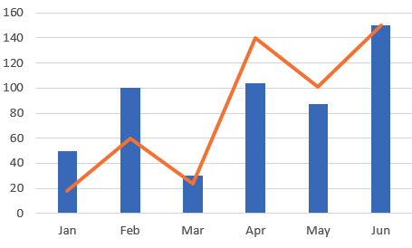

Hi,
Can anyone help me make line plot with data point?
Welcome to the forum. Your question is too vague. Can you provide more information about what exactly you’d like to see?
Thanks for your response and sorry about the vague question.
With visualization, I can easily make a scatter or line plot each but don’t know how to combine them like a figure below.
In addition to that, I’d like to know how to overlap multiple plots with different Y-axis scale such as line plot over bar chart like below.

Any comments or references are welcome! Thank you very much in advance.
Once you make a query, make a new visualization (should be a tab with a plus button above the result pane). You can then define a new chart. You can add multiple Y columns in a line or bar chart, which should achieve your intent.
If you want to mix a bar and line chart together though… I don’t think Redash supports that option out of the box.
Exactly right 
Actually it does  . You can combine a line and bar chart together using the
. You can combine a line and bar chart together using the Series tab of the visualization editor.
Yes, I have tested line and bar plots for different features in one chart. But it’s hard to manage for two different features since their range of values are very different.
I also tried line and scatter for one feature but it didn’t allow.
(I’d like to emphasize the data point with markers)
You can tweak your SQL to make the same column appear multiple times and plot them as distinct Y datapoints to achieve the layering.
Also per @jesse, try playing with the Visualization Editor. If you go to “Series” you can try switching the “Type” for a given series.
And you can go to “Data Labels” and turn on “Show Data Labels”.
Thanks for your tip. I made two columns for the one feature and plots line and scatter distributions together.
Now, the plot is good but when I hover on the plot, it shows two same values and two labels.
I am trying to find the way to control legend and hover.
Could we add a feature to assign chart type and color with a regex matching on the series?
E.g. I can manually make a graph like below.
The problem is, I have to specify the type and color for each series manually. I need to manually set it every time the data is refreshed.
If we can have a regex matching, it will solve the problem. e.g. for every series matching “.*Average.*”, set the type to line, for every series matching “.*Series A.*”, set color to red.
Any thought?
{kind=link}
{kind=link}
{kind=link}